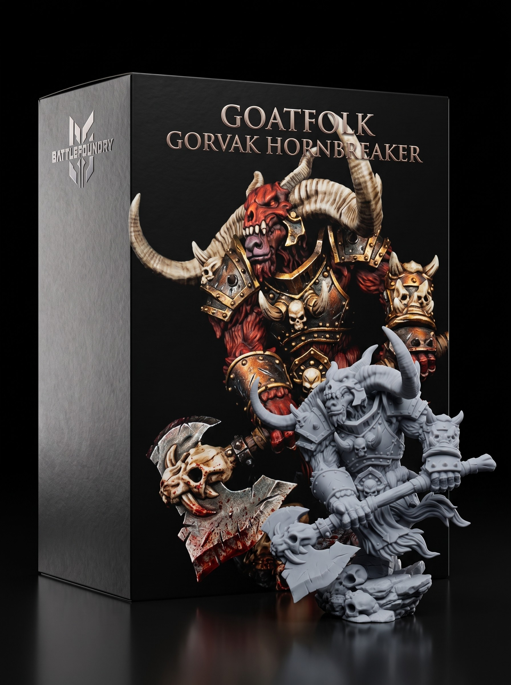

Grimdark Grave Inquisitor Miniature STL
October 03, 2026

The greatsword shears clean through the swinging tombstone. Shattered masonry explodes in a cloud of grey powder. The behemoth shrieks as violet flame cauterizes its shoulder. Black blood boils on the frozen floor. The Dread Knight does not pause. He steps inside the reach and drives his armored shoulder into the monster's ribs.
A bronze bell tolls from the gallery above. The sound vibrates through the stone floor. The behemoth freezes mid-swing. A Grave Inquisitor walks out onto the crumbling balcony. Heavy chainmail hangs beneath his ragged velvet vestments. An iron cage-mask conceals his face. In his right hand, a burning thurible swings on six heavy iron links.
Green vapor pours from the vents of the brass censor. The smog coats the flagstones like spilled oil. The reaching hands inside the beast's chest go limp. The monster drops its head and bows toward the balcony. In his left hand, the Inquisitor draws a notched executioner blade. The steel is crusted with old black blood.
The Inquisitor points the blade directly at Varek. He speaks a single word of binding command. The Dread Knight turns his horned helm toward the gallery. Steel scrapes against stone as three threats lock eyes in the dark.
Get free miniatures:
- Fantasy: https://cults3d.com/@BattleFoundry
- Scifi: https://cults3d.com/@BATTLEFOUNDRYSCIFI
- Grimdark: https://cults3d.com/@DREADWORKS
- Resin Statue: https://cults3d.com/@BlacksiteSyndicate